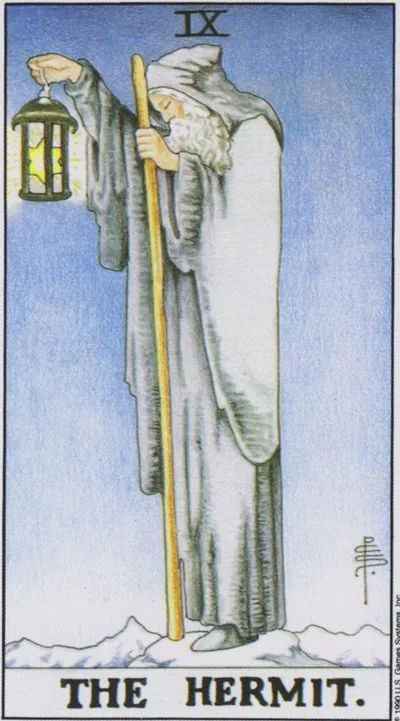

Старший аркан · IX
IXОтшельник
The Hermit
Фонарь поднят выше — видно дальше: уединение, поиск истины и мудрость, дозревающая в тишине; время отойти от шума, отложить срочное и услышать наконец собственный ответ.
Архетип и основное значение
Старец стоит на вершине, освещая путь фонарём, в котором сияет шестиконечная звезда — печать Соломона. Он поднялся сюда не от бедности, а от насыщенности: мир был прожит, и теперь ищется то, что остаётся после всего. Посох — опора пути, снег под ногами — тишина, в которой слышно главное.
Отшельник — аркан паузы между главами жизни: уход в себя здесь не бегство, а паломничество внутрь. Он приходит, когда ответы перестали находиться снаружи — в советах, новостях, развлечениях, — и единственной неисследованной территорией осталась внутренняя. Его подарок — глубина: найденное самостоятельно уже никогда не отберут.
В быту
День, проведённый с собой, идёт на пользу: разбирайте архивы, фотографии, книги, наводите порядок в файлах и мыслях. Хорошо гулять одному без наушников, вести дневник, держать телефон подальше. На вопросы «почему такой молчаливый» отвечайте мягко: вам просто нужна тишина, и это нормально.
Работа и карьера
На работе Отшельник — время индивидуальной экспертизы: анализ, аудит, исследование — всё, что делается в тишине и требует глубины, а не скорости. Возможно временное отделение от команды — удалёнка, учёба, работа над собственной методикой; не воспринимайте это как отлучение. Хороший период, чтобы стать консультантом: опыт, накопленный в шуме, теперь продаётся лучше в тишине.
Отношения
В любви аркан редко бывает лёгким: он говорит о дистанции, которая нужна хотя бы одному из двоих, — пауза для размышлений, раздельные комнаты, поездка в одиночку. Пары, способные дать друг другу воздух, выходят из этого периода ближе; пары, воспринимающие тишину как угрозу, — с трещиной. Одиночкам Отшельник советует не форсировать поиск: сейчас ценнее разобраться, зачем вам вообще отношения. Тень — превратить «личное пространство» в крепость, из которой не выходят даже на зов любви.
Здоровье
Карта указывает на необходимость снижения нагрузки: режим, сон, разгрузочное меню, паузы между делами — тело просит не героизма, а тишины. Девья связь с пищеварением напомнит: еда в спокойствии лечит, еда в тревоге вредит. Хороший период для санатория, полного обследования, работы с психологом — всего вдумчивого и системного.
Эзотерическое значение
Путь Йод, «руки», соединяет Тиферет и Йесод: свет, сжатый в точку, становится семенем следующего цикла. Фонарь с печатью Соломона делает Отшельника покровителем внутреннего учителя — того голоса, который узнаётся как свой после лет проверки. В традиции это аркан посвящения через одиночество: не все истины передаются словами. Медитация на него — практика молчания: даже двадцать минут без входящей информации дают уму ту тишину, в которой слышно направление.
Уединение стало западней: изоляция затягивается, подозрительность заменяет живой мир, тишина уже не лечит — отшельник забыл, что его фонарь существует для идущих в темноте людей.
Архетип и основное значение
Перевёрнутый Отшельник — уединение, переставшее быть выбором. Изоляция затягивается: человек неделями не выходит из дома, обрывает контакты и называет это независимостью, а держит его там страх или старая обида. Свет фонаря сужается до луча подозрения — окружающие кажутся либо угрозой, либо недостойными.
Возможен и второй перекос: вечный искатель, коллекционирующий учения и уединения, чтобы никогда ничего не завершить и никого не впустить. Или человек, сбежавший от себя в шум, лишь бы не остаться наедине с вопросами. Аркан предлагает вернуться к середине: тишина нужна дозированно — как соль, а не как воздух.
В быту
В быту дни проходят одинаково: дом — работа — дом, сообщения прочитаны и не отвечены, встречи отменены четвёртый раз подряд. Сначала это комфорт, потом — клетка, стены которой вы строили сами. Заметьте, если разговоры свелись к переписке, а выход из квартиры требует преодоления. Антидот прост и неприятен: один живой контакт в день — звонок голосом, кофе с человеком, очередь, в которой вы стоите, а не курьер.
Работа и карьера
На работе перевёрнутый Отшельник — профессиональная изоляция: вас выключили из информационного обмена, или вы сами отвергли всё новое, защищая «свой метод». Экспертиза без контакта деградирует: рынок ушёл вперёд, а вы спорите с версией пятилетней давности. Возможен и уход в тень после конфликта — молчаливое выполнение минимума, которое читается как увольнение по частям.
Отношения
В отношениях карта показывает стену: партнёр рядом, но каждый в своей комнате; разговоры заменены бытом, а близость — вежливостью. Либо это одиночество после разрыва, затянувшееся сверх всякого срока: обида охраняет дверь лучше любого замка. Одиночкам перевёрнутый Отшельник честно говорит — вы не «пока не встретили того», вы не выходите туда, где таких встречают.
Здоровье
Изоляция имеет точную физиологию: дефицит солнца и движения, витамин D ниже нормы, нарушение сна, обострение депрессивных состояний, ослабленный иммунитет. Самодиагностика в четырёх стенах коварна: интернет находит болезни, которых нет, и пропускает те, что есть, — дойдите до живого врача. Особое внимание — затянувшейся меланхолии: если серость дней стала фоном более месяца, это медицинский вопрос, а не характер.
Эзотерическое значение
Духовно перевёрнутый Йод — рука, сжатая в кулак: свет, полученный для передачи, удержан и начал тлеть. Карта указывает на ложное отшельничество — гордое «я выше этого мира», за которым прячется страх близости, — и на затворничество как бегство от незавершённого. Учение, добытое в тишине, проверяется службой: если знание не возвращается к людям, оно мертвеет.
🌿 Кратко и просто
Основная идея
Отшельник — это отказ от множества ради одного. Одна цель, одна точка зрения, одна деталь, одно дело.
Как проявляется
Сосредоточенность, самостоятельность, экспертность, аскетизм и глубокое погружение в выбранную тему.
Работа
Узкий специалист, консультант, эксперт.
В отношениях
Иногда человеку действительно необходимо побыть одному, чтобы понять, чего он хочет.
Теневая сторона
Изоляция становится чрезмерной. Человек перестаёт видеть мир за пределами собственной точки зрения.
Особенность школы
Ключевой образ карты — Один, отдавший глаз ради знания, и Диоген, который последовательно избавлялся от всего ненужного.
📜 Развёрнуто — выжимки лекций
Суть карты
Ядро карты — «отказ от множества, уход в одно»: одна точка зрения, одна деталь, одно дело. Сквозной ряд лекции: Один (вырвал глаз ради одного зрения), Прозерпина (одно зерно вместо множества), Диоген (убрал всё лишнее). Главная карта — бог Один, «всеотец»: на старейшей колоде Висконти-Сфорца Отшельник нарисован с весами, часами, посохом и синим плащом — именно Один, странник в поисках истины. Астрологически — 6-й дом, Прозерпина + Меркурий: распределение карт по кругу Зодиака он принимает у Юрия Хана («по другому распределить было бы сложно и нелогично»), но соответствия даёт мифологически. Важно: карта не статичная — активность в голове («шестерёнки постоянно скрипят»); знание ≠ мудрость — «знание это информация, а мудрость — понимание того, что с этой информацией сделать».
Прямое положение
- Медицинская тема встречается только внутри описания 6-го дома (медучреждения, фармацевтика, диеты, косметология, гигиена). Славянского ряда нет — сознательно берутся общеизвестные образы: славянских богов «знают очень мало».
- - Общий ряд: одиночество и сосредоточенность на чём-то одном; «предельная субъективность» — один человек, одна точка зрения; уходят не куда-то, а от чего-то — от мира, который мешает (скит, пустынь — «прийти можно только целенаправленно»); найденная мудрость; узкий специалист-эксперт; маяк — работа на благо незнакомых людей («светить другим своим собственным божественным светом»); энергия возникает из желания — «энергия есть желание, это огонь», надо понять, «где у этого робота кнопка».
- - Отношения: «давай поживём раздельно», «хочется остаться одному обдумать» — закрытость, прагматичность, «из этого уходит душа»; но прямое чтение — осознание своих истинных желаний: дал человеку побыть одному, тот понял, что ему одному плохо, и вернулся («потерявши — плачем»); общение по принципу «ты мне нужен как риэлтор», без выяснения семьи и собачки (это Рыбы).
- - Работа/финансы: индивидуальность со своим взглядом на рабочие вопросы, изолированность и погружённость (знать себя → знать работу); аскетизм, экономия, прагматизм; функционализм — «скальпель должен лежать в руке и быть острым, рисовать на нём розочки незачем»; отдельное жильё на отшибе, особнячок в горах у озера; финансовый/банковский консультант; редко выпадающее значение — чёрная бухгалтерия. Поездка — скорее нет; если едешь, то «правильное планирование поездки»; формула — «отшельник это командировочный»: в купе поезда довольствуется малым.
- - Саморазвитие: погружение в себя, понимание отдельной детали характера другого; отбрасывание лишних привычек и чужих оценок; прицеливание одним глазом — точно видишь цель.
Негативное значение
- Отдельного блока нет — минусы качеств он называет попутно:
- - «Аутизм» (выражение лектора): «слишком глубокий уход в себя, слишком глубокий отказ от социализации — уже негативное значение».
- - Эксперт по всему: думает, что всё знает, а сам «плавает по верхам» и ошибается — пример: Лукашенко, «главный специалист по коровам и молочным фабрикам».
- - Чрезмерно узкий специалист: чинит только Mercedes, до Audi даже не заглядывал.
- - Занудство, узость мысли, мелочность — концентрация только на своём.
- - Непрокачанный, неправильный отшельник — бомж: убирает «лишнее», не видя, что мешает другим (Диоген же — правильный: себя поддерживал в порядке).
Акценты и фишки школы
- - Один: отдал правый глаз Мимиру за питьё из источника мудрости у корней Иггдрасиля («отдать глаз — избавиться от другой точки зрения»); провисел 9 дней, пронзённый своим копьём, на мировом древе — познал руны (тот же сюжет в Повешенном); вороны Хугин и Мунин (думающий и помнящий), волки Гери и Фреки; копьё маскировал под посох; в «Американских богах» — стеклянный глаз и «не терял я глаз».
- - Прозерпина: её знак — «точка за скобками», одно отделённое зерно; похищена Аидом, вкусила зёрнышко граната; цикл «закопал зерно → проросло» = аграрная символика; искусственная селекция — перебираешь множество зёрен и выбираешь одно (Золушка; Дюймовочка за кротом-Аидом); естественный отбор — по Венере/Тельцу; гранаты ранее были на Императрице и у Жрицы.
- - Диоген: бочка, рубище, фонарь — «днём с огнём ищу человека»; разбил последнюю чашку, увидев мальчика, пьющего из ладони; Александру Македонскому — «отойди от солнца». Фонарь классического образа Отшельника — намёк именно на Диогена.
- - Маяк: смотритель живёт один на скалистом берегу, огонь нужен не ему, а кораблям — служение незнакомым людям.
- - Осевые пары: Отшельник размазан между 5-м и 6-м домами; Дева и Рыбы — «две стороны одной монеты» (микроскоп против телескопа); Шерлок собирает целое из иголок, Ватсон-Рыба пишет красочно; всегда понимает следующую карту — Колесо Фортуны (бухгалтер понимает бухгалтерию, механизм мира); перекличка со Звездой: ищет путеводную звезду прежде всего для себя — «самая маленькая звёздочка всего человечества», фонарь — «божественный свет сознания внутри черепушки».
- - Кино как обязательный блок: «Американские боги»; Гэндальф — бродяжник без дома, «везде в гостях», мудрец-советчик; «Марсианин» («один в поле воин», всё использует с умом); Шерлок Холмс (индукция; опиум и скрипка как инструменты фокуса); «Парфюмер» (Гренуй в пещере без запахов — фокус на одном чувстве); «Остров» Лунгина (старец + юродивый; жёг сапоги настоятелю, чтоб тот не подавался комфорту); «Фонтан» Аронофски — его самый любимый фильм: полёт к туманности Шибальба, мироустройство поверх Иггдрасиля.
- - Приёмы практики: медитация на одной мантре («ом мани падме хум»), рыбалка и длинная дорога как легальный вход в состояние карты; «карантин — хороший способ познать себя». Банцхафа не цитирует вовсе; Каббалу, руны и нумерологию называет чужими рамками; метод — «не заучивать значения»: «прочувствуете Отшельника как самого себя — сможете ответить на любой вопрос клиента» (пример: клиент с большой семьёй, убегающий на работу ради тишины).
Ключевые слова
- уход в одну точку · найденная мудрость · предельная субъективность · сосредоточенность на деталях · отшельник-командировочный · маяк света истины · аскетизм и функционализм · отбросить лишнее · погружение до механизма (Колесо Фортуны) · «аутизм» в минусе
- ---